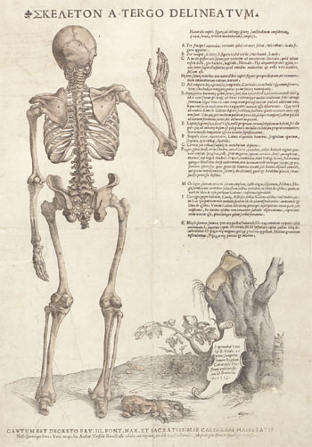

Illustrations of the Tabulae sex , 1538
We know that Vesalius took enormous trouble with his illustrations. In the so-called China root
letter (1546), written after the completion of the ambitious Fabrica , he declared that
he no longer has "to put up with the bad temper of artists and cutters who made me more
miserable than the bodies I was dissecting." (Saunders and O'Malley, p.124).
He must already have had experience of the problems before he began work on the Fabrica ,
because in 1538 he had been involved in the production of a set of six large 'tables', the
Tabulae anatomicae or Tabulae sex .
These are 'fugitive sheets' or broadsides. Three of the sheets, illustrating the portal, caval
and arterial systems respectively, made use of charts drawn by Vesalius himself for purposes
of teaching his students; the other three were drawn by the Netherlandish artist
Jan Stefan van Calcar (1499-1546) from a skeleton of the human body that Vesalius had constructed.

Image © Glasgow University Library.
'The skeleton drawn from behind'. On the shield, propped against the tree trunk, is written:
"Printed at Venice by B. Vitali, Venetian, at the expense of Jan Stefan van Calcar.
For sale in the shop of D. Bernardus. In the year 1538." Along the bottom of the
sheet are three privileges, from the Pope, the Emperor and the Venetian Senate, prohibiting others from
printing or selling these plates.
The woodcut medium used for the illustrations, allowed the images to be keyed to brief
explanatory captions, printed on the same sheets, thus making these broadsides ideal
didactic tools.(1)
In the letter of dedication, Vesalius wrote: "I believe it is not only difficult but entirely
futile and impossible to attain an understanding of the parts of the body...from pictures...alone,
but no one will deny that they assist very greatly in stengthening the memory
in such matters."(2)
An inscription on one of the 'tabulae' reveals much interesting information.
It was Calcar who had put up the money to finance the project, the sheets were printed
in Venice by B. Vitale and offered for sale in the shop of D. Bernardi ('Prostrant vero
officina D. Bernardi.'). Vesalius was at the very beginning of his teaching career
in 1538, but his keeness to communicate knowledge by making available graphic representations
was already evident. His enthusiasm had evidently communicated itself forcefully enough to
persuade Calcar to take the commercial risk. A ready clientele from among Vesalius'
students could no doubt have been guaranteed. Control of the 'tabulae' remained with
Vesalius himself, for it was he who applied for and was granted privileges by the Pope,
the Emperor and the Venetian Senate to prevent anyone from printing them without his permission.
(1) The great advantage of using a woodcut
image in a printed book is that a wood
block can be set into the same forme as the movable type for the text and all
printed together in one operation. Careful design of the layout of the forme
allows a very close integration of text and image. [Back]
(2) J.B. de C.M. Saunders and C.D. O'Malley, The Illustrations from the Works of Andreas
Vesalius of Brussels (Cleveland and New York: 1950), p.233. [Back]
© 2004 Edinburgh University Library / Royal College of Physicians of Edinburgh
www.lib.ed.ac.uk
10 November 2004
|